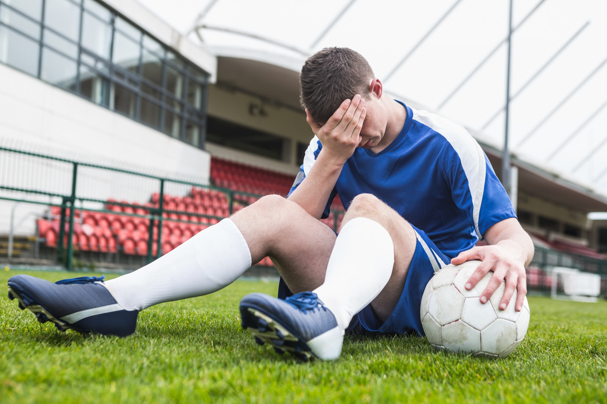

Social and Life Stress
Outside pressure from family and friends is also a huge factor when it comes to athlete stress. A coach or a parent might expect too much from the player like only winning or improving a lot. This can make an athlete feel like they arent good enough to be playing which can cause stress and doubting their skills. Some athletes might start to feel like their whole identity is just about being an athlete. If they arent playing well or get hurt, they might feel like theyve lost who they are. Feeling like this can make the stress feel even worse making them think they have no life outside of their sport. A lot of athletes struggle when it comes to balancing their practice, school, friends, and alone time. When they have little to no time to relax, rest, and socialize it can make them feel alone and exhausted which can increase the risk for a burnout